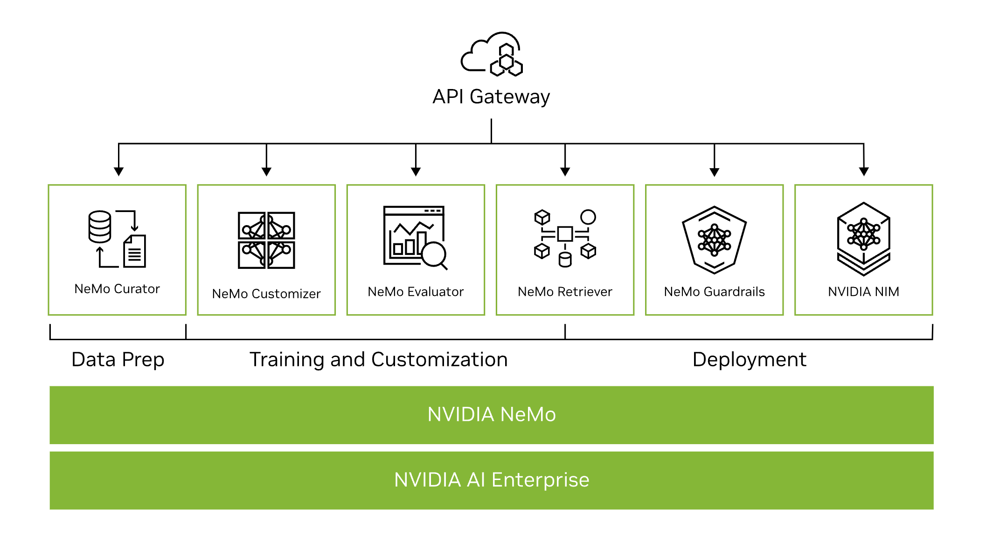

NVIDIA NeMo (Generative AI)#
Build, customize, and deploy generative AI.
What Is NVIDIA NeMo?#
-
NVIDIA NeMo is an end-to-end platform for developing custom generative AI—including large language models (LLMs), multimodal, vision, and speech AI —anywhere.
-
Deliver enterprise-ready models with precise data curation, cutting-edge customization, retrieval-augmented generation (RAG), and accelerated performance.
-
NeMo is a part of the NVIDIA AI Foundry, a platform and service for building custom generative AI models with enterprise data and domain-specific knowledge.
Benefits of NVIDIA NeMo for Generative AI#
- Flexible: Train and deploy generative AI anywhere, across clouds, data centers, and the edge.
- Production Ready: Deploy into production with a secure, optimized, full-stack solution that offers support, security, and API stability as part of NVIDIA AI Enterprise.
- Increased ROI: Quickly train, customize, and deploy large language models (LLMs), vision, multimodal, and speech AI at scale, reducing time to solution and increasing ROI.
- Accelerated Performance: Maximize throughput and minimize LLM training time with multi-node, multi-GPU training and inference.
- End-to-End Pipeline: Experience the benefits of a complete solution for the LLM pipeline—from data processing and training to inference of generative AI models.
Complete Solution for Building Enterprise-Ready LLMs#
The Features of NVIDIA NeMo#

Accelerate Data Curation - NeMo Curator#
NVIDIA NeMo Curator is a GPU-accelerated data-curation tool that enables large-scale, high-quality datasets for pretraining LLMs.
Read the Blog Try Tutorial Notebooks Apply for Early Access
Simplify Fine-Tuning - NeMo Customizer#
NVIDIA NeMo Customizer is a high-performance, scalable microservice that simplifies fine-tuning and alignment of LLMs for domain-specific use cases, making it easier to adopt generative AI across industries.
Read the Blog Apply for Early Access
Evaluate Models - NeMo Evaluator#
NVIDIA NeMo Evaluator provides automatic assessment of custom generative AI models across academic and custom benchmarks on any platform.
Read the Blog Apply for Early Access
Seamless Data Retrieval - NeMo Retriever#
NVIDIA NeMo Retriever is a collection of generative AI microservices that enable organizations to seamlessly connect custom models to diverse business data and deliver highly accurate responses.
Read the Blog on Developing Production-Grade Text Retrieval Pipelines for RAG Start Prototyping
Generative AI Guardrails - NeMo Guardrails#
NVIDIA NeMo Guardrails orchestrates dialog management, ensuring accuracy, appropriateness, and security in smart applications with LLMs. It safeguards organizations overseeing generative AI systems.
Generative AI Inference - NVIDIA NIM#
NVIDIA NIM, part of NVIDIA AI Enterprise, is a set of easy-to-use microservices designed for secure, reliable deployment of high-performance AI model inferencing across clouds, data centers, and workstations.